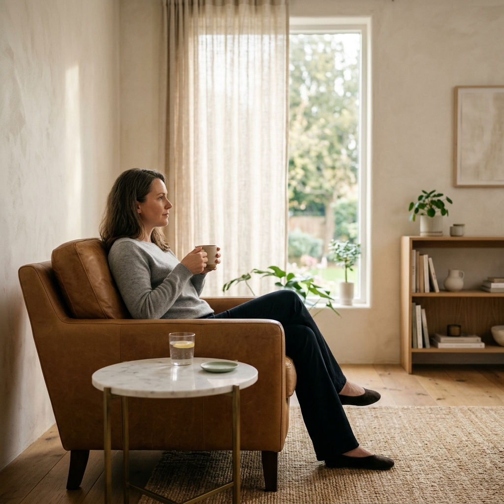
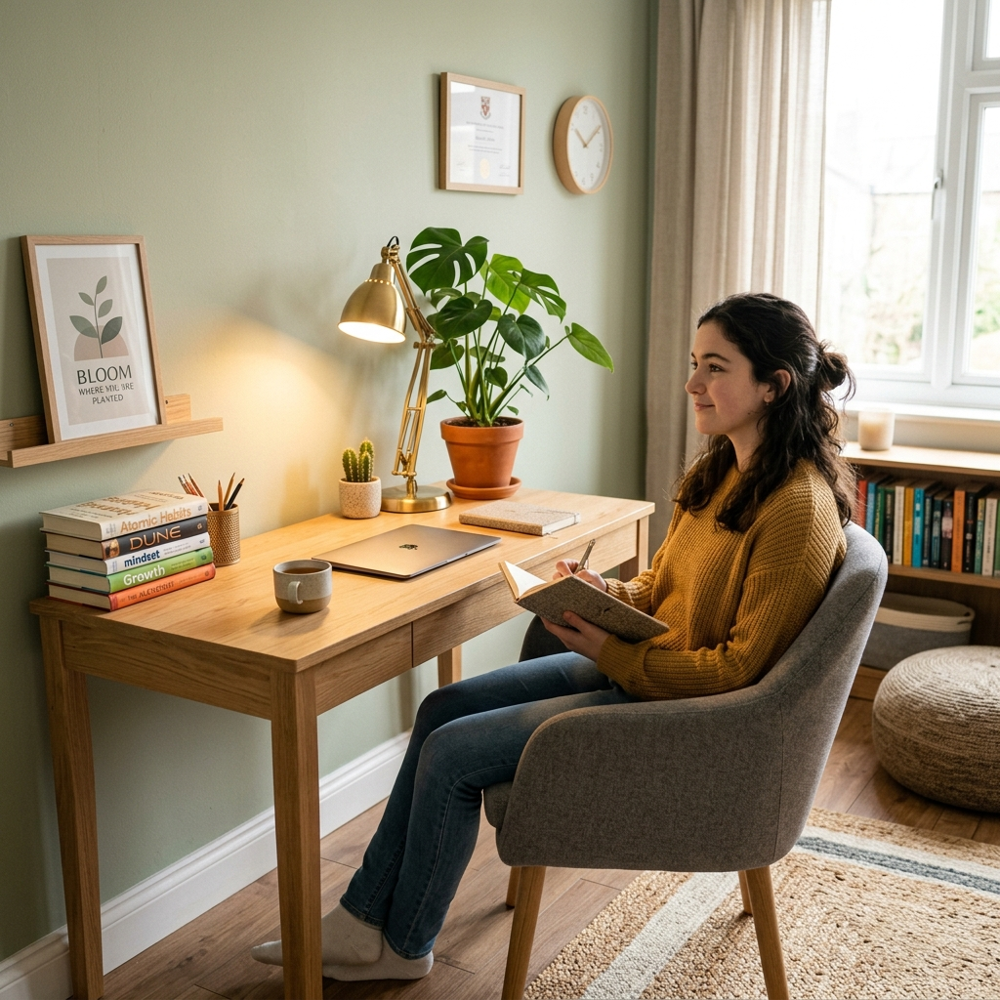
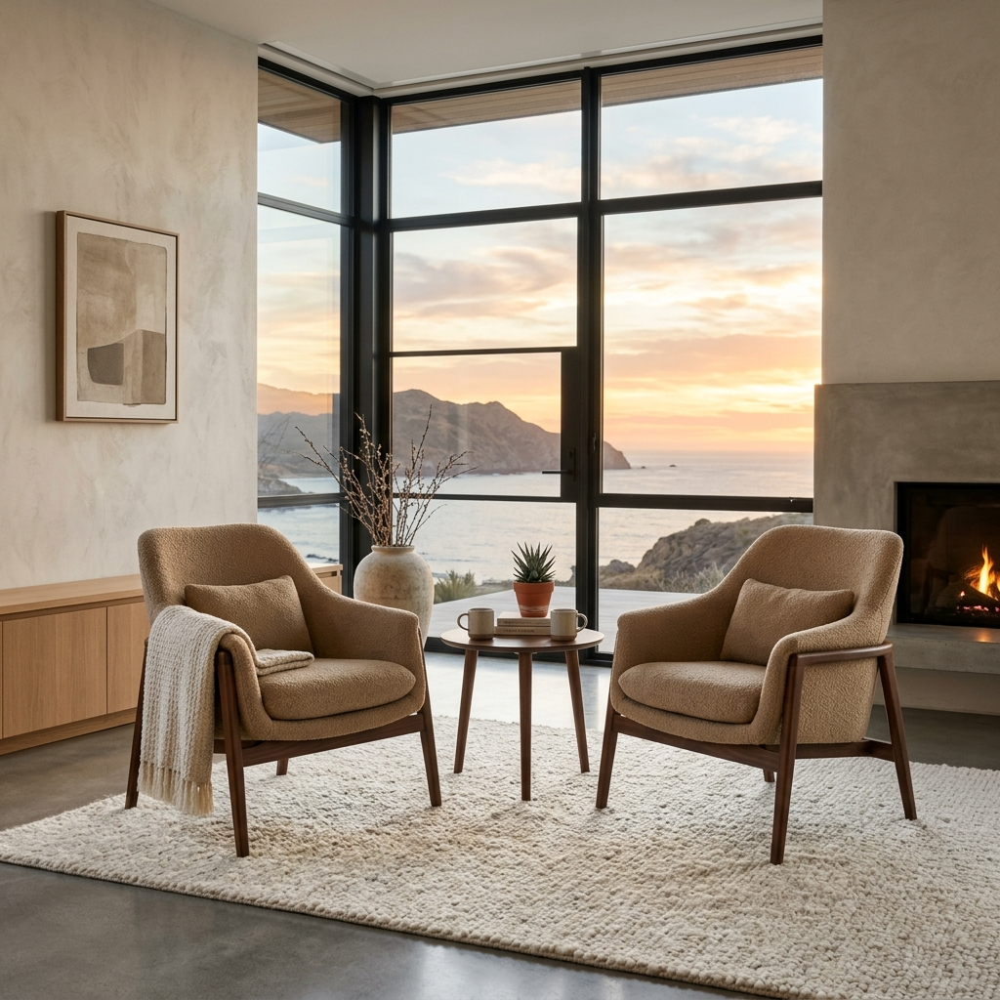

Danışmanlık Hizmetleri
Farklı ihtiyaçlara yönelik bilimsel dayanaklı danışmanlık yaklaşımları ile yanınızdayım. Detaylı bilgi almak istediğiniz alanı aşağıdan inceleyebilirsiniz.

Bireysel Danışmanlık
Bireysel danışmanlık, sadece semptomları dindirmek değil, kişinin kendi içsel dinamiklerini anlamlandırması ve yaşam kalitesini sürdürülebilir bir şekilde artırması için kurulan profesyonel bir ittifaktır. Kaygı, depresyon veya karmaşık yaşam olaylarıyla başa çıkarken; bilimsel dayanaklı yöntemlerle (BDT, Kabul ve Kararlılık Danışmanlığı) duygusal esnekliğinizi artırmayı hedefliyoruz.

Ergen Danışmanlığı
Ergenlik, biyolojik ve psikolojik olarak yeniden yapılanmanın yaşandığı, hassas bir dönemdir. Bu süreçte gence eşlik ederken; kimlik gelişimi, sosyal uyum ve akademik baskı gibi konuları ele alıyor, aile dinamiklerini de gözeten destekleyici bir klinik süreç yürütüyoruz.

Çift ve İlişki Danışmanlığı
İlişkiler, en derin yara ve en güçlü iyileşme potansiyelini bir arada barındırır. Gottman yöntemi ve bağlanma odaklı perspektifle; partnerler arasındaki iletişim döngülerini anlamlandırmak, güveni yeniden inşa etmek ve her iki tarafın da duyulduğu, anlaşıldığı sağlıklı bir bağ kurmak üzerine çalışıyoruz.
Travma & EMDR Danışmanlığı
EMDR (Göz Hareketleriyle Duyarsızlaştırma ve Yeniden İşleme), geçmişte yaşanan ve "donmuş" kalarak bugünkü işlevselliğimizi bozan travmatik anıların beyinde sağlıklı bir şekilde işlenmesini sağlayan güçlü bir yöntemdir. Bilimsel olarak kanıtlanmış bu teknikle, anıların üzerindeki yoğun duygusal yükü hafifletiyor ve iyileşme sürecini hızlandırıyoruz.
Anksiyete ve Kaygı Yönetimi
Anksiyete, aslında vücudun yanlış bir alarm sistemidir. Panik atak, sosyal fobi veya yaygın endişe durumlarında; kişinin bu alarm sistemini anlaması, beden duyumlarıyla barışması ve kaçınma davranışlarını sonlandırması üzerine klinik bir protokol uyguluyoruz.
Depresyon ve Duygu Durum
Kendini boşlukta, enerjisiz ve umutsuz hissetme hallerinde; yaşamsal aktivasyonu artırmak, olumsuz otomatik düşüncelerle (BDT) baş etmek ve danışanın kendi değerlerine uygun bir hayat inşa etmesini sağlamak için çalışıyoruz. Melankoli ve yas süreçlerinde profesyonel klinik destek kritik önem taşır.

Şema Danışmanlığı
Şema Danışmanlığı, çocukluk ve ergenlik döneminde karşılanmayan temel duygusal ihtiyaçlarımız sonucu oluşan "erken dönem uyumsuz şemalarımızı" (Örn: Kusurluluk, Terk Edilme) değiştirmeye odaklanan bütüncül bir yaklaşımdır. Hayatınızda sürekli tekrar eden kısırdöngüleri kırmak için derinlemesine bir karakter analizi ve değişim süreci sunar.
Sıkça Sorulan Sorular
Danışmanlık süreciyle ilgili en çok merak edilen konuları aşağıda bulabilirsiniz.
Danışmanlığın süresi; danışanın ihtiyacı, başvuru nedeni ve hedeflerine bağlı olarak değişkenlik gösterir. Bazı süreçler kısa süreli ve çözüm odaklı (8-12 seans) ilerlerken, Şema Danışmanlığı gibi derinlemesine karakter çalışmaları daha uzun soluklu bir zaman dilimini kapsayabilir.
Klinik olarak en verimli süreç haftada bir yapılan görüşmelerle sağlanır. Ancak danışanın durumuna ve ihtiyacına göre iki haftada bir şeklinde düzenlemeler de yapılabilir.
İlk seans, genellikle "tanışma ve değerlendirme" seansıdır. Bu aşamada sizi danışmanlığa getiren ana nedenler hakkında konuşur, öz geçmişinizi değerlendirir ve çalışacağımız hedefleri birlikte belirleriz.
Araştırmalar, online danışmanlığın birçok durumda yüz yüze danışmanlık kadar etkili olduğunu göstermektedir. Önemli olan danışan-danışman ilişkisinin sağlıklı kurulmasıdır. Mesafe veya yoğun tempo nedeniyle online danışmanlık tercih edilebilir.
Gizlilik, danışmanlığın en temel etik ilkesidir. Seanslarda konuşulan her şey, etik ve yasal sınırlar dahilinde psikolog ve danışan arasında kalır. Bu güven ortamı, iyileşmenin kurucu unsurlarından biridir.
Hangi danışmanlığın sizin için uygun olduğuna karar veremediniz mi?
Ön görüşme talep ederek, ihtiyaçlarınızı birlikte değerlendirebilir ve size en uygun danışmanlık planını oluşturabiliriz.
İletişime Geçin